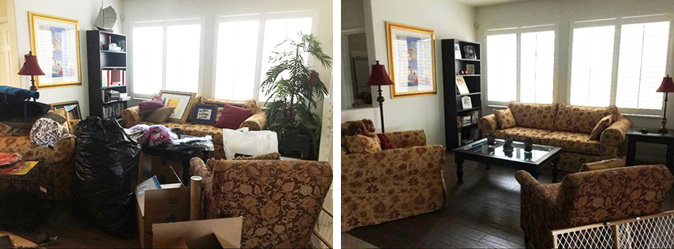
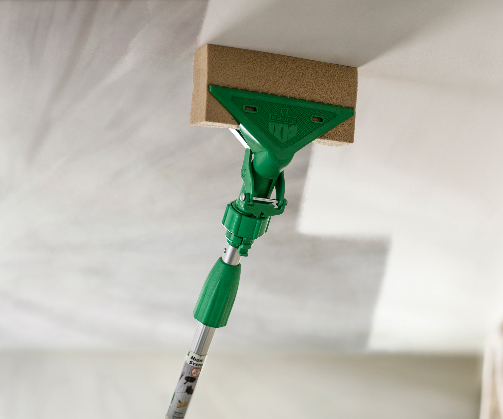
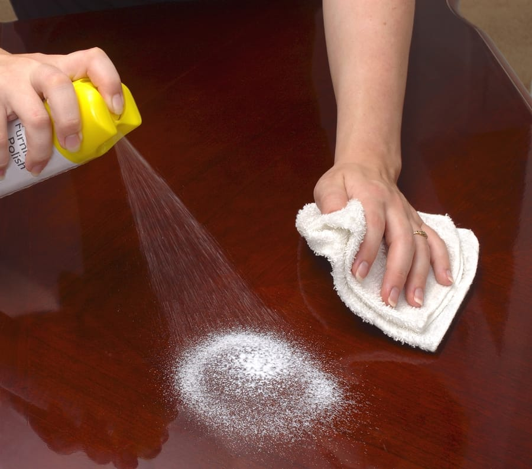
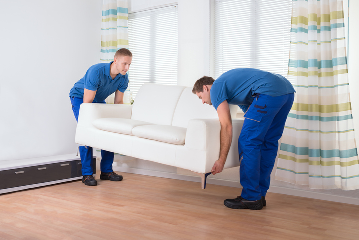

With our deep cleaning service, we start with six basic tasks. Once we've completed those, we move on to tackling a few room-specific chores. Our deep cleaning services comes in handy before you host company or when daily clutter and messes have started to pile up. You can also get our deep cleaning service as as part of your annual cleaning regimen in the spring or fall. Soon you'll have a clean and tidy place that can pass a white-glove inspection.
The first thing we do is find a new place for your furniture or with your permission get rid of any visible clutter that does not belong in the room. We save the stuff behind closed doors for another day to help simplify our deep cleaning service. Clearing clutter makes deep cleaning easier and seeing those tidy surfaces makes you happy.
We tackle large, hard-to-reach surfaces first in this order: ceiling, ceiling trim, ceiling light fixtures (including bulbs), walls, the rest of the trim, and baseboards. We use a clean microfiber mop or a duster with a telescoping handle to get the best results for these surfaces. Surfaces closer to the floor tend to build up dirt and dust, so we use warm water mixed with a specialized soap. In bathrooms, add a splash of white vinegar to the mixture to stop mold and mildew. For spots where using a mop is awkward or inconvenient, we use a microfiber cloth. Then, we rinse often and wring thoroughly.
Next we wipe all remaining hard surfaces (wood furniture, shelves, built-ins, etc.) using furniture cleaner and polish and a soft cloth. Finally, we take a lint roller to the lampshades.
Lastly, we move the furniture, even larger pieces like beds and sofas. To make moving heavy pieces easier, we place furniture slides under the legs of big pieces. We then break out our vacuum's crevice tool to get at the dirt in corners and along baseboards. If you have a hard floor, we clean it with a microfiber mop and the appropriate cleaner for the surface. If you have carpet, we clean it in a specialized way. For more information on how we clean crapets check out our Crapet cleaning services page.
Need a reliable and trustworthy cleaning service to maintain your home's cleanliness on a regular basis? Our long-term house cleaning services provide peace of mind and a comfortable living space.
Phone: (234)-746-6789
Email: tiddyTouch@gmail.com


Experience the convenience of a clean living space every single day! Our cleaning services are tailored to meet your specific needs and ensure that your home is always spotless. Say goodbye to clutter and hello to relaxation as our team of experts keeps your living environment well-maintained on a daily basis. No more worries about taking care of household chores yourself, we're here to handle it all for you! Choose us for a hassle-free, everyday cleaning experience.